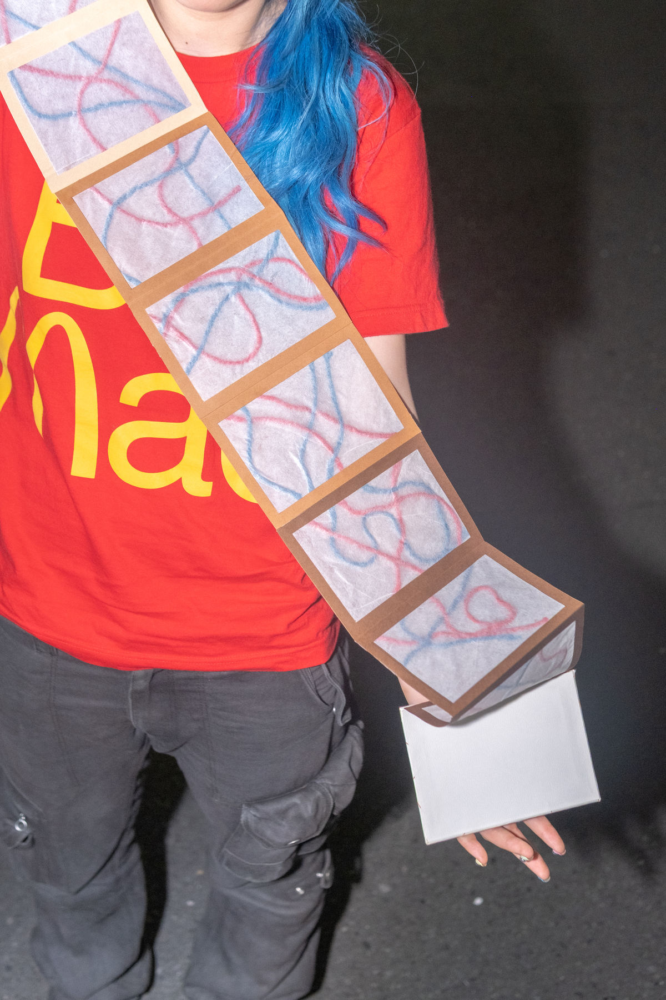

循環する血液。人種が変わってもその色は変わらない。

Concept
授業内で与えられた「Echoes in time」というテーマから、「血液」というコンセプトを設定した。この「Echoes in time」という英単語から、直訳では「反響する時間」。そこから、「流行」「流れ」というものにフォーカスし考えた。流行は、時間で変わりゆくもの。流れは、動き続け止まらないもの。この「流行」「流れ」の解釈から、「血液」というコンセプトに至った。また、この蛇腹製本の性質と共通する部分がある。蛇腹製本はページが連続的に繋がり、広げることで「流れ」や「動き」を感じさせる構造を持っている。また、開く、閉じるなどの反復的な動きを持っているため、心臓のポンプの働きと通じる部分がある。 「血」と言われると、「グロテスク」などの印象が強いが、「生命」で考えると、命を繋ぐような神秘的と捉える考え方もできる。この「血液」とは神秘的とグロテスクという正反対の性質を持つ、不思議な存在と言える。この正反対から出てくる「違和感」というものを取り入れた。
（開）1210mm × 160mm